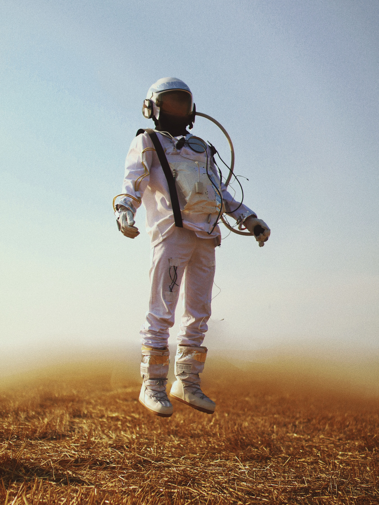

Antiquity and first observations
The first humans had limited understanding of the celestial bodies that could be seen in the sky. The Sun, however, was of immediate interest, as it generates the day-night cycle. Even more, the dawn and sunset always take part at roughly the same points of the horizon, which helped to develop the cardinal directions. The Moon was another body of immediate interest, because of its higher visual size. The Lunar phases allowed to measure time in longer periods than those of days, and predict the duration of seasons.One of the earliest recorded studies of astronomy is Ptolemy's Almagest. It proposed the geocentric model, with Earth at the center of the universe and the Sun, Moon, and planets in orbit around it. The stars would be fixed in a giant sphere, beyond Earth and the planets. The sun and the moon were in simple spheres, but the planets were thought to orbit around spheres that in turn orbited around Earth. It was a complex model, but it could predict the movements of the celestial bodies with a reliable accuracy, and remained in use until the 16th century.
